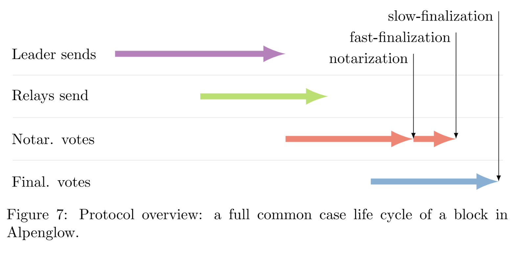

Quentin Kniep, Jakub Sliwinski, Roger Wattenhofer
White Paper
In this paper we describe and analyze Alpenglow, a consensus protocol tailored for a global high-performance proof-of-stake blockchain. The voting component Votor finalizes blocks in a single round of voting if 80% of the stake is participating, and in two rounds if only 60% of the stake is responsive. These voting modes are performed concurrently, such that finalization takes min(δ80%, 2δ60%) time after a block has been distributed.
The fast block distribution component Rotor is based on erasure coding. Rotor utilizes the bandwidth of participating nodes proportionally to their stake, alleviating the leader bottleneck for high throughput. As a result, total available bandwidth is used asymptotically optimally.
Alpenglow features a distinctive "20+20" resilience, wherein the protocol can tolerate harsh network conditions and an adversary controlling 20% of the stake. An additional 20% of the stake can be offline if the network assumptions are stronger.

@article{kniep2025SolanaAlpenglow,
author = {Quentin Kniep and Jakub Sliwinski and Roger Wattenhofer},
title = {Solana Alpenglow Consensus},
year = {2025}
}